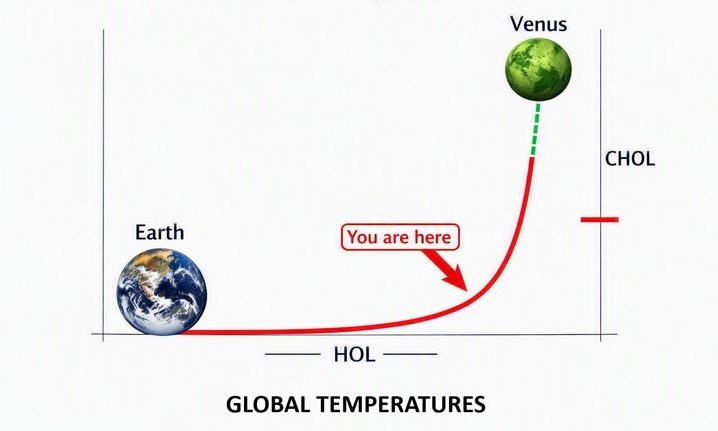

This page is written to expose the high‑stakes physical reality of global warming, sea‑level rise, and the systems they will overwhelm — not to sensationalize, not to gloss over realistic consequences, but to give readers the opportunity to consider for themselves what is actually happening rather than dismiss it unexamined as “fear‑porn,” because it is not.

Then a mighty angel picked up a stone the size of a great millstone and cast it into the sea, saying: “With such violence the great city of Babylon will be cast down, never to be seen again. 22And the sound of harpists and musicians, of flute players and trumpeters, will never ring out in you again. Nor will any craftsmen of any trade be found in you again, nor the sound of a millstone be heard in you again. — Revelation 18:21-22
John described something “like” a great millstone being thrown into the sea. The word like simply means similar to, not identical. In John’s world, the largest object he could compare to was a millstone — a heavy stone used for grinding grain. He had no concept of glaciers, ice sheets, or continental slabs of ice collapsing into the ocean. Today, global warming is causing exactly that: enormous masses of ice breaking off and plunging into the sea. The ancient symbol aligns with the modern physical reality.
In Revelation, Babylon is not a single city. It is a worldwide way of life, a global system built on commerce, greed, and idolatry. Babylon represents a civilization that believes it cannot fall because it is wealthy, connected, and powerful. It blinds people with luxury and distraction, convincing them that everything is stable even as it quietly drains the world around it.
Babylon is portrayed as a marketplace overflowing with goods, a culture intoxicated by wealth, and a world order built on exploitation. It collapses suddenly, not because of an external attack, but because the system destroys itself from within. This pattern mirrors the modern world almost exactly. The global system today is built on commerce that never stops, greed that never slows, and idolatry that elevates comfort, entertainment, and wealth above truth.
Most people think global warming means the planet is simply getting hotter. That is true, but it is only the surface of the problem. Global warming is the breakdown of the planet’s entire life‑support system — the ecosystem and climate engine that make civilization possible.
It affects the air we breathe, the oceans that regulate temperature, the forests that create rainfall, the storms that distribute heat, the seasons that guide growth, and the ice that stabilizes the planet. It affects soil, rivers, plants, animals, and the delicate balance between them. Everything is connected. When one part breaks, the others begin breaking too.
The world ecosystem is a single interconnected network. Forests create rain and store carbon. Oceans absorb heat and support food chains. Ice reflects sunlight and keeps the planet cool. Soil holds nutrients and supports agriculture. Rivers carry minerals across continents. Seasons guide the growth of plants and the migration of animals.
This system is not a collection of separate parts. It is one giant, interconnected whole. When a major component collapses — such as a rainforest or coral reef — the shock spreads through the entire network. The ecosystem becomes less stable, less predictable, and less capable of supporting human civilization.
The climate system is the machinery that keeps the planet stable. Ocean currents move heat around the world. Jet streams guide weather patterns. Monsoons deliver seasonal rainfall. Storm tracks shift energy across oceans. Temperature zones determine where crops can grow. Humidity cycles regulate evaporation and precipitation.
Civilization depends on this stability. Without predictable seasons, farming fails. Without stable coastlines, cities flood. Without reliable rainfall, water systems collapse. The climate system is not just “weather.” It is the foundation of human life on Earth.
Many people believe global warming is a slow process that will become serious in the distant future. In reality, many parts of the world system are already past their limits.
Rainforests are drying and losing their ability to make rain. Coral reefs have died in many regions, altering ocean chemistry. Permafrost is melting and releasing methane, accelerating warming. Ice sheets are cracking and sliding faster every year. Ocean currents are weakening. Storms are becoming erratic. Humidity is rising worldwide. Seasons are shifting. Ecosystems are collapsing quietly, even when they still appear green from a distance.
The world system is not “in danger.” It is in transition — moving into a new state that cannot support civilization the way we know it.
A tipping point is a moment when a system becomes so stressed that it changes suddenly and permanently. Once a tipping point is crossed, the system cannot return to the way it was. This is not a gradual shift; it is a break.
When one tipping point is crossed, it pushes others forward. This creates a cascade — a chain reaction of failures. The Amazon rainforest, the Congo basin, and Southeast Asian forests are approaching or have already crossed their tipping points. Coral reefs have collapsed. Permafrost is thawing. The Greenland and West Antarctic ice sheets are destabilizing. The AMOC is weakening and nearing collapse.
Each collapse accelerates the next. This cascading pattern is the physical version of Babylon’s fall.
Scientists have recently discovered that the rate of warming exacerbates and amplifies the effect of tipping points. This is different from the old assumption that warming was dangerous only because of how much heat accumulated. What matters just as much — and in some cases more — is how fast the temperature rises.
A system under slow stress can sometimes adapt. A system under fast stress cannot. When warming accelerates, ecosystems and climate systems lose the ability to adjust gradually. Forests dry faster than they can regenerate. Ice melts faster than it can stabilize. Ocean currents weaken faster than they can redistribute heat. The rate of change becomes a force multiplier.
This means tipping points don’t just break because the world is hot — they break because the world is heating too quickly for the system to absorb the shock.
Once the rate of warming becomes part of the process, exponential behavior is guaranteed. Faster warming weakens forests. Weakened forests produce less rain. Less rain increases heat. Increased heat melts ice faster. Faster melt disrupts ocean currents. Disrupted currents destabilize weather. Destabilized weather damages forests further.
Every step exacerbates and amplifies the next step. Every amplification increases the rate of warming. And the increased rate of warming amplifies every tipping point again.
This is the definition of an exponential curve: a process where the speed of change increases the strength of the next change. Early climate models assumed warming was linear. But once the rate of warming becomes a driver of collapse, the slope bends upward. The curve becomes exponential because the system is feeding back into itself.
The following chart illustrates the accelerating nature of global temperature rise — the curve that begins gently and turns sharply upward, symbolizing the transition from stability to runaway feedback.

The curve represents the exponential acceleration of planetary warming. “You are here” marks the present inflection point.
Venus is a real example of what happens when a planet’s climate system enters runaway feedback. Its average surface temperature is around 867°F (464°C) — hot enough to melt lead. The planet is covered in a thick atmosphere of carbon dioxide, with clouds of sulfuric acid that rain downward before evaporating in the intense heat. Volcanic activity is widespread across the surface, and the pressure at ground level is more than 90 times that of Earth’s atmosphere.
Venus is not “hot” in the way people imagine. It is a world where the climate engine has locked into a permanent, self‑reinforcing state — a greenhouse feedback loop that never stops. Once the process began, the planet’s temperature didn’t rise gradually. It rose exponentially, until the entire system became uninhabitable.
Scientists believe Venus may once have had conditions suitable for liquid water, and possibly even life. Whether it truly supported life is irrelevant. What matters is that Venus stands as a signpost: a planet that crossed too many tipping points, too quickly, and entered a runaway state that could never reverse.
Across the Amazon, the Congo, and Southeast Asia, large portions of the rainforest are no longer functioning as living forests. During recent heat‑dome events — where a massive bubble of high‑pressure air traps heat over a region — the canopy was flash‑fried. The internal structure of the leaves collapsed, but the chlorophyll remained intact. Under a heat dome, the air does not circulate normally; the heat simply builds and builds until the forest shuts down.
These events pushed many trees into a comatose state. They still appear green from a distance, yet they are no longer performing the functions that define a living forest. They are not photosynthesizing normally. They are not producing rainfall. They are not regulating humidity. They are not storing carbon. They are using just enough biological energy to keep their leaves green — nothing more.
From space, satellites detect “greenness,” and early models assumed greenness meant life. But greenness is not life. Greenness is only color.
For years, scientists relied heavily on satellite imagery to estimate forest health. Satellites measure reflectance — how green the canopy appears. But after the heat‑dome flash‑fry events, the leaves stayed green even though the trees were no longer active. This created the illusion of stability. The forests looked intact from above while collapsing from within.
Only when researchers entered the forests directly did the truth become clear: the trees were zombies — biologically present, visually green, but ecologically dead. They were no longer part of the climate engine. They were no longer producing the rainfall that sustains the world system. They were no longer buffering heat or storing carbon. They were simply standing in place, waiting to fall.
The Amazon, the Congo, and Southeast Asia are not “in danger.” They are already gone in the functional sense. Their collapse is not a future event — it is a present condition.
The world’s tipping points do not collapse randomly. They collapse in a sequence — each one triggering the next, each one amplifying the next, each one accelerating the next. This pattern is automatic. It is built into the design of Earth’s climate and ecosystem from the beginning. A system this interconnected cannot break in isolation. When one part fails, the others are forced to respond.
Once the first major tipping point is crossed, the sequence becomes self‑destructive. Drying forests weaken rainfall. Weak rainfall destabilizes soil. Destabilized soil reduces plant growth. Reduced plant growth increases heat. Increased heat melts ice faster. Faster melt disrupts ocean currents. Disrupted currents destabilize weather. Destabilized weather damages forests further. The loop tightens. The collapse accelerates.
This is not a chain that can be paused. It is a self‑sustaining process. Each failure amplifies the next failure. Each acceleration increases the next acceleration. The system begins feeding on itself, moving toward a new state that cannot support the world as it once was.
This sequence was always part of creation. Earth’s stability depends on balance; when the balance is broken, the system automatically shifts into correction. But when the imbalance becomes too great, the correction becomes irreversible. The tipping points were designed to protect the planet — but once overwhelmed, they become the mechanism of collapse.
And that mechanism has already been triggered.
Early climate models were built on the assumption that global warming would increase at a steady, linear rate. Heat would rise predictably, ice would melt gradually, and major climate thresholds would arrive far in the future. These models reflected the best understanding available at the time, but they also treated Earth’s systems as if they were separate, simple, and slow to respond.
As real-world data accumulated, scientists began to see that many changes were not following those linear expectations. Ice sheets were melting faster than predicted. Forests were drying sooner than predicted. Permafrost was thawing deeper than predicted. Ocean currents were weakening more rapidly than predicted. The pace of change was not steady — it was accelerating.
Because of this accelerating behavior, some climatologists have expressed alarm that the breakdown may be occurring non-linearly, and in some cases exponentially. When one system destabilizes, it increases the stress on the next, and that next system collapses faster than models originally projected. This compounding effect forces scientists to update their timelines, moving projected dates for major climate thresholds closer and nearer.
If the East Antarctic Ice Sheet, West Antarctic Ice Sheet, Greenland, and the world’s glaciers collapse into the ocean, the consequences are straightforward.
Sea levels rise dramatically — not by inches, but by tens of meters. Entire coastlines disappear. Every major coastal city becomes uninhabitable. Nations lose their land. Islands vanish completely. Ocean currents break down as cold, fresh meltwater disrupts circulation. Weather becomes chaotic. Food systems fail as climate zones shift. Governments destabilize under the pressure of mass migration. Heat accelerates because ice, which reflects sunlight, is replaced by dark ocean water that absorbs it.
Civilization as we know it cannot survive this combination of changes.
Revelation’s Babylon is a global system built on commerce, greed, and idolatry. It collapses suddenly and cannot be rebuilt. The modern world is a global system built on consumption, extraction, and denial. It is crossing tipping points and cannot return to stability.
The symbolism and the physical reality align. Babylon falls under its own weight. So does the modern world.
John saw a massive object thrown into the sea, symbolizing the fall of a world system. Today, we see massive glaciers collapsing into the ocean, destabilizing the planet and ending the global system built on excess. The ancient metaphor and the modern mechanism describe the same event in different language.
Civilization does not need a 200–250 foot sea‑level rise to enter collapse. The global system is built on coastal infrastructure: ports, naval bases, refineries, and container terminals sitting at or near sea level. Long before the ice sheets deliver their full height, a smaller rise is sufficient to break the system.
A rise of roughly ten feet is enough to make the world’s major sea ports inoperable. When ports drown, transoceanic shipping stops. When shipping stops, worldwide navies lose their bases, fuel distribution fails, food imports cease, and global supply chains fracture. Economies do not “struggle” under this scenario — they fail.
Revelation describes sea captains mourning because no one buys their cargoes anymore, and kings of the earth standing far off watching the smoke of Babylon’s burning. This is the language of a global trade system that has died. When the ports are gone, the cargoes have no buyers. When the system burns, the rulers can only watch from a distance.
In biblical terms, a “city” is a metaphor for a system or world‑order, not just a single location. Babylon represents a global commercial structure built on greed and idolatry. The “seven hills” can be understood symbolically as the seven continents — a worldwide network of commerce and maritime trade.
The latest satellite analyses describe the Thwaites Eastern Ice Shelf as behaving like a structure “hanging on by a thread” — a phrase used by multiple glaciologists to characterize the partial detachment of its last remaining pinning point. This pinning point once stabilized the shelf by anchoring it to the seabed; its weakening signals imminent structural failure.
Ice shelves act as buttresses: they hold back the glaciers behind them. When a shelf collapses, those glaciers accelerate toward the sea. The ice currently restrained by the Thwaites system represents on the order of ten to fifteen feet of potential global sea‑level rise once buttressing is lost and retreat begins.
The threshold for Babylon’s collapse is not theoretical. It is already being approached in the physical world.
Sea‑level rise of 10–15 feet does not merely erase luxury coastal real estate. It erases entire cities, ports, distribution hubs, and low‑lying nations. These are the places where food, medicine, tools, clothing, electronics, and fuel enter the economy. When they go underwater, the physical geography that supports ordinary life collapses.
The collapse of these cities is not symbolic; it is mechanical. They are the nodes through which global supply chains operate. When ports and coastal logistics hubs drown, container shipping, naval resupply, fuel distribution, food imports, pharmaceutical imports, electronics imports, and manufacturing inputs all suffer a hard stop. Scarcity is no longer a matter of price or policy; it becomes a matter of physical impossibility.
Major retailers such as Walmart, Target, Costco, and Home Depot operate on just‑in‑time logistics. Typical stores carry only a few days of inventory for fast‑moving goods, and distribution centers carry roughly one to two weeks. If the ports that feed these networks are lost, then even without panic buying, Walmart’s shelves would be largely empty within two to three weeks—and they would not refill. The system that delivers goods ceases to exist, and scarcity becomes structural, cascading through every aspect of daily life.
John described the effect: islands disappearing. Today we understand the cause: massive sea‑level rise from collapsing ice sheets. When tens of meters of water enter the ocean, islands do not sink slowly. They vanish. Coastlines drown. Nations disappear. The world map changes permanently.
A sea‑level rise of 10–15 feet does not only drown ports and coastal cities. It drowns the physical infrastructure that makes e‑commerce, digital communication, and modern finance possible. The systems people treat as “virtual” are built on hardware sitting at or near sea level: fiber‑optic landing stations, data centers, exchanges, banks, warehouses, and power grids.
Global e‑commerce depends on coastal fulfillment centers, warehouses, ports, and airports. When ports drown, container ships cannot dock, air freight cannot move, and coastal distribution hubs are lost. Automation systems, robotics, and inventory routing software have nothing to manage because there are no goods arriving. E‑commerce does not slow down under these conditions; it stops.
Subsea fiber‑optic cables come ashore at low‑lying coastal landing stations. Major data centers are built near these landing points and near coastal power infrastructure. A 10–15 foot rise floods landing stations, power substations, cooling systems, and server halls. Backbone routing fails, cloud services go dark, and the global internet breaks into unstable, regional fragments. The “cloud” disappears because the buildings that house it are underwater.
Modern mobile phones are thin clients that depend on apps, cloud services, and continuous connectivity. Cell towers, base stations, and switching centers are tied into the same coastal fiber and power networks that serve data centers and exchanges. When those networks fail, phones may still power on, but most of what makes them “smart” stops working: messaging apps, navigation, payments, banking, authentication, and online commerce. Devices become mostly offline tools, not gateways to a functioning world.
The power grid does not survive a ten‑foot rise. Coastal substations, transformers, and switching yards drown first, severing regional transmission. Fuel supply chains collapse when ports go under—coal, LNG, diesel, and replacement parts all arrive by ship. And the power plants themselves depend on stable cooling water systems that fail when intake channels flood or become contaminated. Without power, data centers go dark, fiber networks go silent, warehouses shut down, and mobile networks collapse. The digital world does not die because the satellites fail; it dies because the electricity that makes every part of modern life possible can no longer be delivered.
In this scenario, e‑commerce dies, the internet fractures, mobile phones lose their network, and the financial system drowns. The digital and economic structures that once defined normal life are replaced by a single priority: survival. Research, investment, and online activity become trivial pursuits in a world where the infrastructure that supported them has been erased.
Modern wealth is not abstract. It is recorded in servers, exchanges, banks, and custodial institutions concentrated in coastal financial districts—Wall Street, the City of London, Singapore’s waterfront, Hong Kong’s Central, Shanghai’s Pudong. A 10–15 foot rise places the physical substrate of the global financial system under water. “Your portfolio” is not simply devalued; it is stranded inside a system that no longer exists in operational form. And the companies you are invested in are not announcing quarterly earnings—they are announcing that their headquarters are gone and their leadership has drowned. A portfolio is meaningless when the world that records ownership has ceased to exist.
A ten‑foot rise is not the end of the story. It is the beginning of a chain reaction. Once the ice shelves fail and the ports drown, the planet begins revealing tipping points that were invisible in a stable climate.
Freshwater pulses weaken the Atlantic overturning circulation, not by freezing Europe, but by destabilizing weather patterns, monsoons, and jet‑stream flow. The Southern Ocean stops ventilating heat, accelerating the melt of the remaining ice shelves. The grounding lines of the East Antarctic Ice Sheet begin to float, unlocking far larger volumes of ice. Submarine landslides trigger regional tsunamis. Jet‑stream patterns fracture into permanent heat domes and stalled storms. Groundwater rises far inland, flooding cities from below even before seawater reaches them.
These tipping points are not theoretical in the abstract sense; they are the natural consequences of destabilizing the ocean, the atmosphere, and the cryosphere at the same time. Each one accelerates the next. Each one makes recovery impossible. The world system does not simply fall — it unravels.
No one truly knows what other tipping points will emerge once the ice shelves fail. Not even the scientists who study Earth’s systems can fully discern the thresholds that lie beyond the first collapse. Complex systems reveal their hidden weaknesses only after they are pushed past stability. New feedbacks appear. Old assumptions break. The world does not simply change — it enters a state no model can fully describe. What follows is not uncertainty in the sense of doubt, but uncertainty in the sense of discovery: the unveiling of consequences that were always present, but invisible until the moment of collapse.
At that stage, people will be too busy trying to survive to continue studying the collapse. Research becomes a luxury, a trivial pursuit carried out only by those with the time and resources to analyze a world that no longer exists. The system that once funded, staffed, and sustained scientific inquiry will be gone, and survival will eclipse curiosity.
Global warming is not just hotter weather. It is the collapse of the world system — the ecosystem, the climate engine, and the civilization built on them. Revelation describes Babylon falling. Global warming shows how it falls.
The “millstone” is the glacier. The “sea” is the destabilized ocean. The “fall of Babylon” is the collapse of the global system built on commerce, greed, and idolatry.
The tipping points described in this chapter are not waiting for a future moment. They are already active, already reinforcing one another, and already driving the world system toward collapse. The drying forests weaken rainfall, the dying reefs alter ocean chemistry, the thawing permafrost releases methane, and the melting ice sheets accelerate sea‑level rise — each one pushing the next forward.
The end is not approaching — it is unfolding. And every effort to halt it has only accelerated the very system ensuring its destruction. Like it or not, believe it or not — it's irrelevant. This is worldwide Babylon and its foretold destruction has been ongoing for some time.
“And unless those days should be shortened, there should no flesh be saved; but for the elect’s sake, those days shall be shortened.” — Jesus
As I noted in my eBook, there is evidence that God is accelerating directly to the very End of Time and bypassing the scheduled collapse of Earth’s ecosystems. The world was originally designed to fail gradually through the tipping‑point sequence embedded in creation itself, but the pattern now indicates a forward acceleration — a compression of the timeline. Instead of allowing the slow, natural breakdown of the ecosystem to run its full course, the process is being shortened. The restraint is lifting, the delay is ending, and the world is being moved directly to the final moment.
This acceleration aligns with the same signals documented in the Finality analysis, the calendrical convergence of Rosh Hashanah and the Coptic New Year, the warning given to Thamud and the Camel of God, and the irreversible structure of the Clenched Fist Trap. Each of these pages reflects a different facet of the same conclusion: the days are being cut short, exactly as Jesus stated, and the world is being carried to the End ahead of the natural schedule.
“Rejoice over her, you heavens!
Rejoice, you people of God!
Rejoice, apostles and prophets!
For God has judged her
with the judgment she imposed on you.” — Revelation 18:20
© 2026 Raphael Asanti · Main site